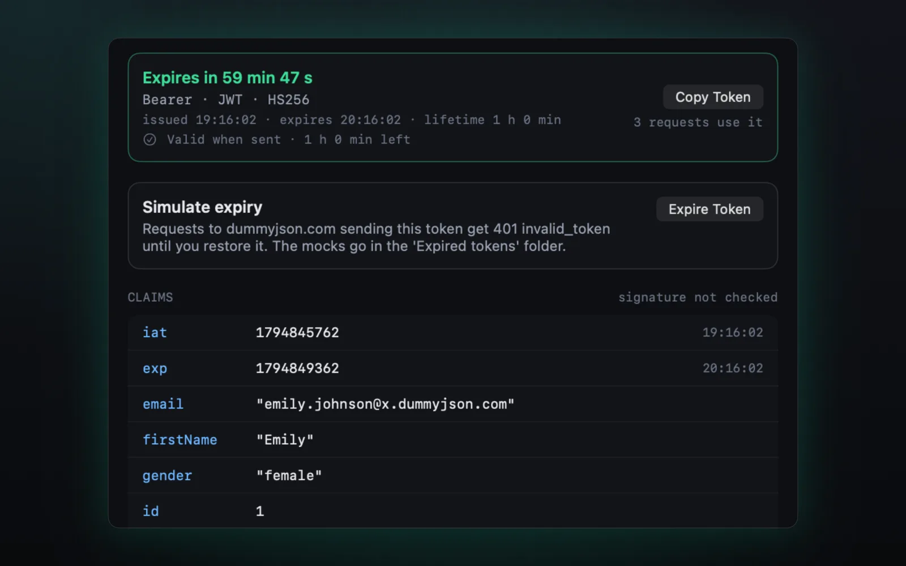
Auth
Tokens, decoded. Then expired.
Every JWT your app sends, with its claims, its history and a live countdown. Press Expire Token and watch whether your refresh logic holds.
SimKit sits beside the iOS Simulator and shows every request your app makes. Mock a response, slow the network, expire a token. Then let Claude Code, Cursor or Codex do the same over MCP.
Free · macOS 14 or later · DMG signed and notarized by Apple
Simulated traffic
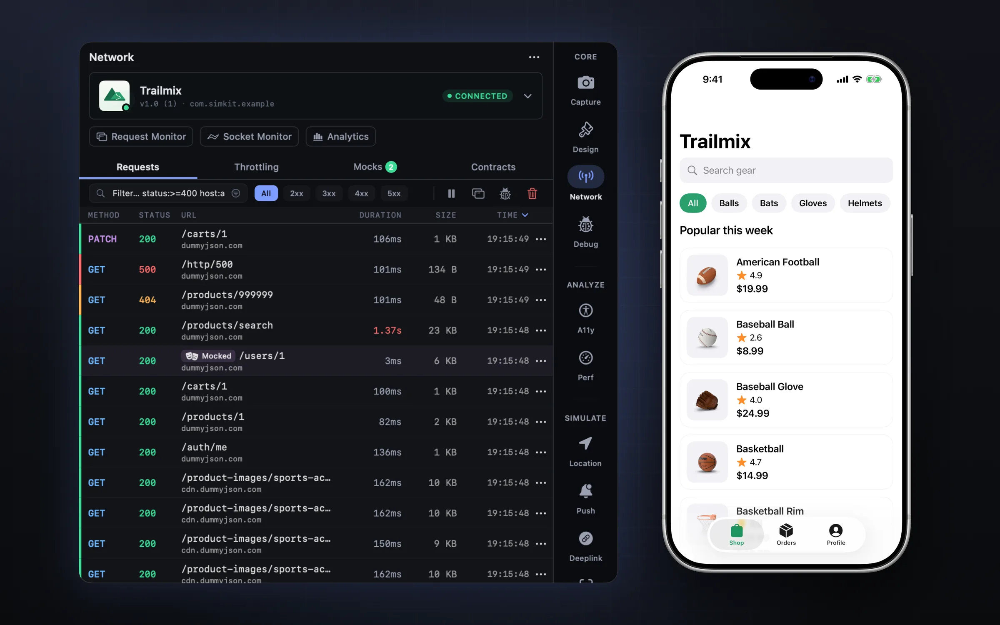
npx -y simkit-mcpNo proxy to configure and no certificate to trust. SimKit reads the traffic from inside your app, so HTTPS just works. How the iOS Simulator network inspector works
Status, timing and size for every call, live. Type a query and the list narrows to the failures, the slow ones or a single host.
status:>=400 host:api slow:>300ms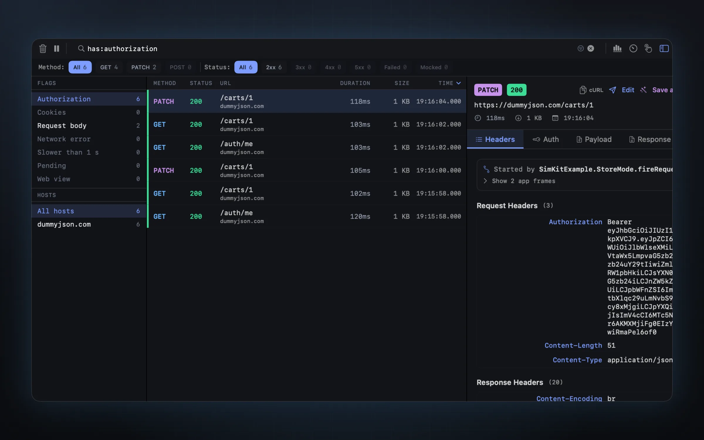
Refresh storms, retried POSTs, duplicate GETs and re-downloads of unchanged data, pointed out for you.
A latency histogram and p50/p95 over time, with the change since the previous window.
Save the shape of a response and get warned the moment the endpoint returns something else.
Swift Codable types from any JSON response.
Filter a body by path, like $.users[*].email, and copy the path, key or value.
Socket frames and web view page loads, next to your HTTP calls.
Fire a burst at an endpoint and watch success rate and latency percentiles build up.
One file with the screenshot, the console and the requests, ready to attach.
Swap a response without touching the backend. Start from one you just captured and change only what you need.
.simkitscenario files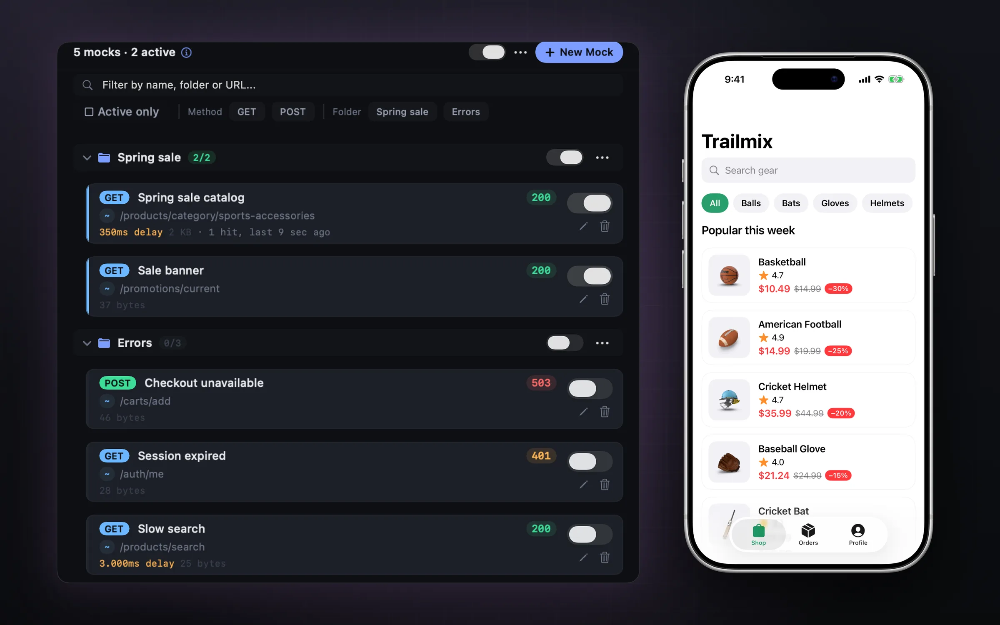

Every JWT your app sends, with its claims, its history and a live countdown. Press Expire Token and watch whether your refresh logic holds.
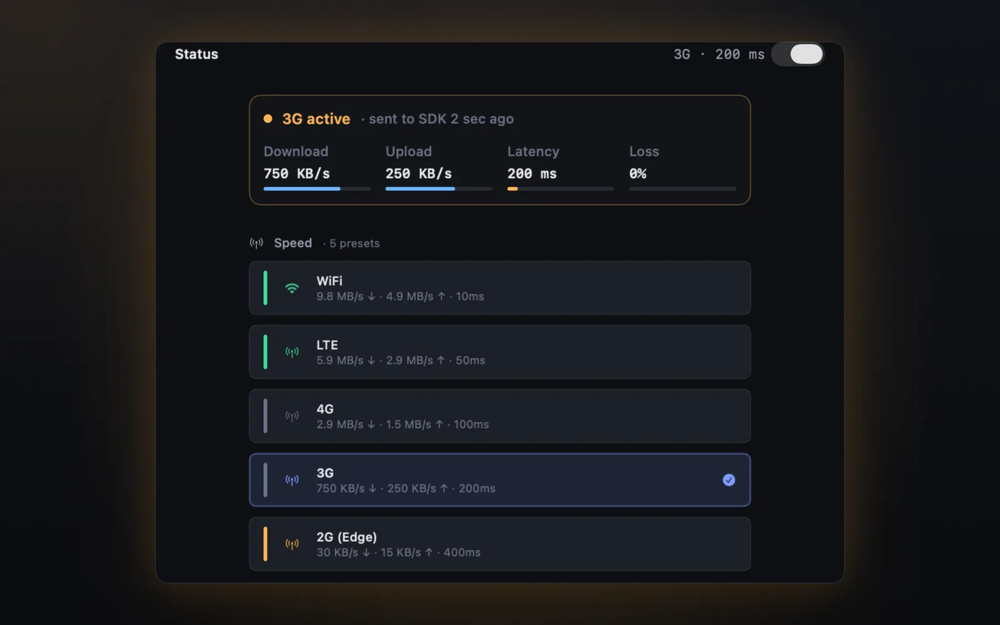
3G, high latency and packet loss for one app, not your whole Mac. Network Weather adds outages, a flapping connection and slow DNS. Three ways to simulate a slow network
The DMG build can start a simulator app with the SDK loaded into it. Requests show up and mocks apply, and your code doesn't change.
Pair an iPhone or iPad with a 6-digit code and watch its requests over Wi-Fi, encrypted. Mocks reach the device too.
An agent can read your source. It can't see which request went out, what came back, or what your app does on a 401. SimKit hands it all of that.
claude mcp add simkit -- npx -y simkit-mcp
Cursor, Codex, Kiro and any other MCP client work too. See the setup for each.
Mock /login to return a 500, relaunch the app and show me what the user sees.
The app shows a blank screen on a 500: LoginViewModel only handles 401. I've added an error state and checked it the same way.
An illustration of a session. The tool names are SimKit's own.
Turn on the switch and press Install next to your agent. SimKit writes the config for Claude Code, Cursor, Kiro and Codex.
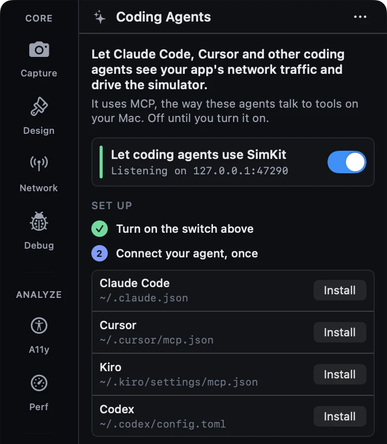
Free, like the rest of SimKit. The MCP server is part of the Mac app.
No simctl one-liners, no trip to the Settings app. Most of these work with any app, no SDK.
Frame rate, memory, CPU and main-thread hangs, sampled once a second while you use the app.
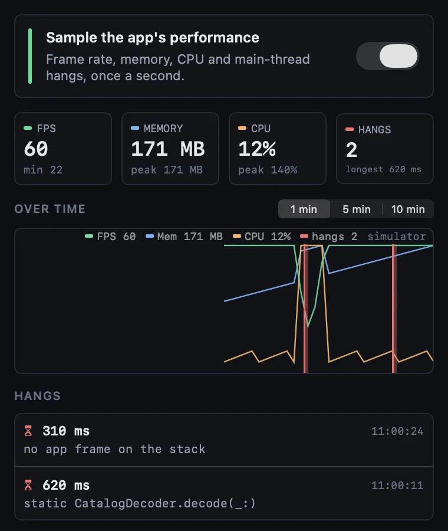
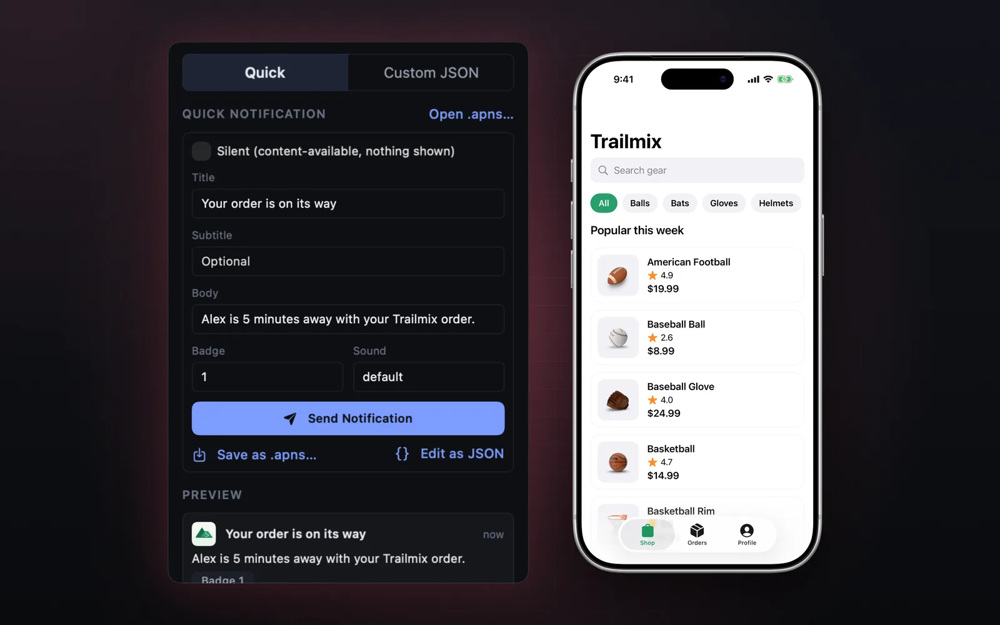
Real banners on the simulator from a quick form, custom JSON or a dropped .apns file, with a live preview and saved templates.
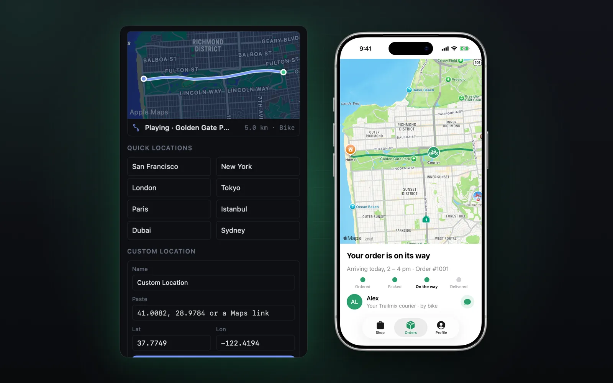
Click a spot on the map, paste coordinates or a Maps link, or play a GPX route at walking, biking or driving speed.
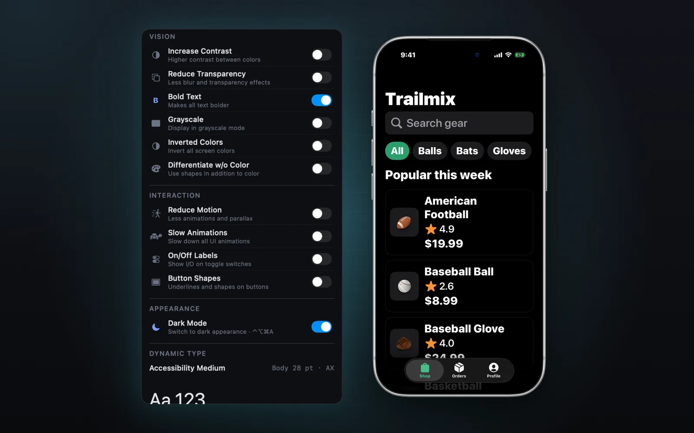
Dynamic Type, dark mode, contrast, bold text and reduce motion without a trip to Settings. An audit scores the screen and lists what to fix.
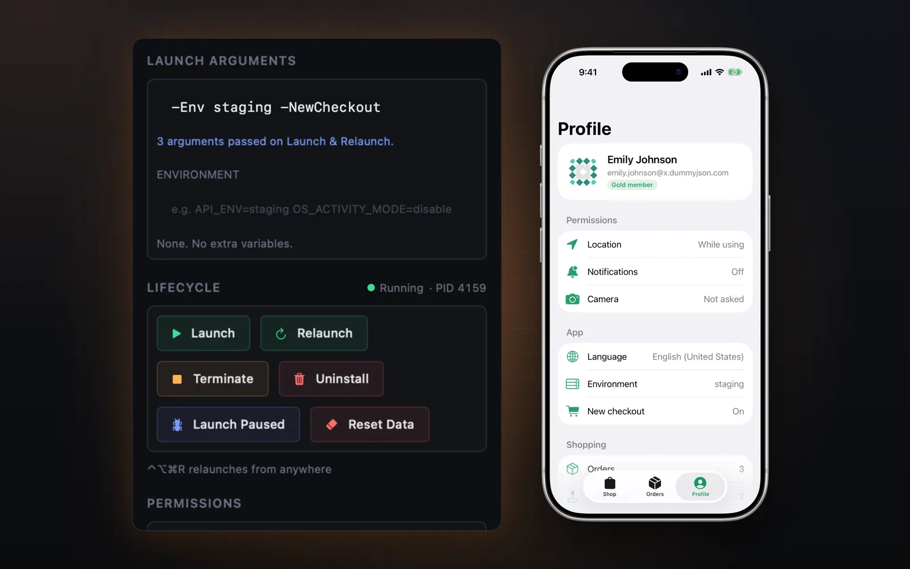
Launch arguments, permissions, locale, UserDefaults, the app's console, a shake or a memory warning. All one click away.
Appearance, status bar, Face ID, rotation and screenshots on an iPhone connected to Xcode.
Save an app's whole state and restore it later, to switch accounts or return to a screen.
Screenshots, video and GIFs with device frames, ready for the App Store.
Compare the screen with a design image, plus grid, rulers and a magnifier.
URL schemes and universal links, saved so you never retype them, and the links your app received.
Matching and failing biometrics, and enrollment, in one click.
A clean 9:41 status bar and real device bezels for marketing shots.
A command bar and global shortcuts for everything in the panel.
The SDK is what lets SimKit see inside your app: requests, mocks, throttling, WebSockets and performance. Enable it inside #if DEBUG and nothing runs in your release builds.
NSAllowsLocalNetworking.// Swift Package Manager: // github.com/ealtaca/SimKitSDK-Binary import SimKit #if DEBUG SimKitSDK.shared.enable() #endif // That's it. Requests now show up // in SimKit on your Mac.
Yes. SimKit is free with no account, and that includes the MCP server. Get it from the Mac App Store, or download the signed and notarized DMG from this site.
No. The SimKit SDK reports requests from inside your app, after the system has decrypted them, so there is nothing to install on the simulator and nothing to trust. Read the network inspector guide
For network monitoring, mocks and throttling, yes: it is one line of Swift, and you enable it inside #if DEBUG. On a simulator, the DMG build can also load it into your app for you. Capture, push, deep links, location, accessibility, biometrics and debug tools work with any app.
Any MCP client that can run a command, including Claude Code, Cursor, Codex and Kiro. Turn on Coding Agents in SimKit's Agents tab, then add npx -y simkit-mcp to your agent. The MCP guide has the steps.
No. SimKit observes and sets things up: requests, mocks, app data, simulator settings and screenshots. Use it next to the tool you already build and tap with.
Captured requests, headers, bodies and tokens stay on your Mac. If you connect a coding agent, what it reads goes to its own model provider, as with any file it reads. SimKit sends anonymous usage data, including the bundle IDs of apps you debug, to Firebase, and you can turn it off in Settings. See the Privacy Policy for details.
Yes. An iPhone or iPad running your app with the SDK pairs with your Mac by a 6-digit code and sends its traffic over Wi-Fi, encrypted. The tools that drive the simulator itself stay on the simulator.
Yes. SimKit supports the Device Hub in Xcode 27 as well as Simulator.app in earlier versions.
macOS 14 (Sonoma) or later.
The App Store version updates through the App Store, the DMG version updates itself. Loading the SDK into an app for you is in the DMG version only.
Not yet, but it will be soon. The app's source code will be published on GitHub. The MCP bridge, simkit-mcp, already is.
Free on the Mac App Store, or as a DMG straight from here.